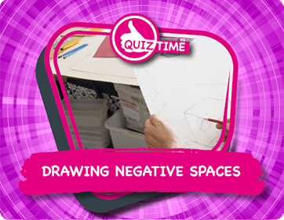

Did you know that your eyes are never still when you look at an object? It's almost impossible to keep your eyes fixed at one point for any length of time. Try it!
Did you know that only a very small point in the middle of your field of vision is in focus? That point is called the fovea. The para-fovea, around the focused point, is all out of focus. That's why your eyes automatically zoom all over an object, to build up an understanding of it. These are called saccadic movements or rhythms. It's almost like the eyes are feeling the object all over to get a complete sense of things.
The edge of your vision is called 'peripheral vision' and although it's not in focus, it is highly sensitive to movement.